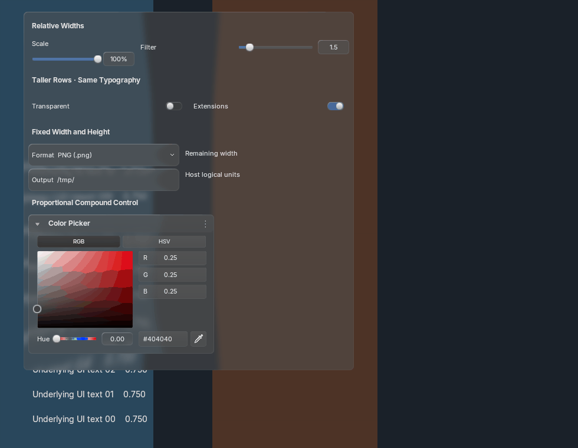
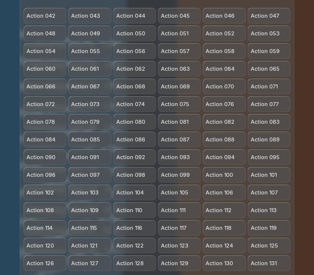

Actual production Blender rendering, shared BVT glass and springs. Controls retain their logical font sizes as layouts change width. Compare the two installed runtimes; exact generated-reference acceptance remains open. These captures are for Tyler’s visual QA.
Behavior and limits · Comparison record · Official source audit · Full parity ledger

360 motion frames across both versions and three scales compare identically with native text batching enabled and disabled. One shared backdrop, one strong blur and retained rendering resources. Raw captures and measurement records are linked below.


5.2 layout measurement · 5.1 layout measurement · Dense before · Dense after · 5.2 real mouse input · 5.1 real mouse input
Parity remains incomplete: 82 API members unimplemented, 55 partial, zero reference-matched. The broader theme/platform matrix, native layout edge cases and specialized templates remain open. No native fallback is being counted as custom parity.